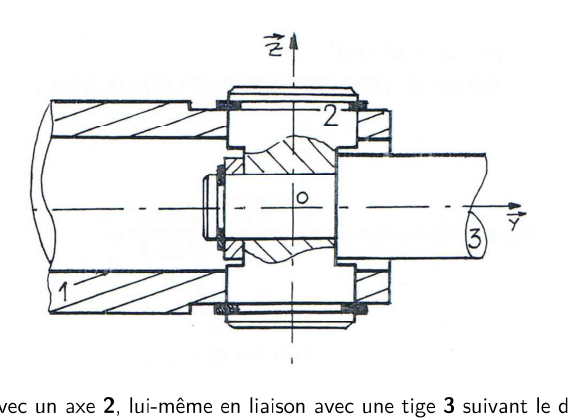
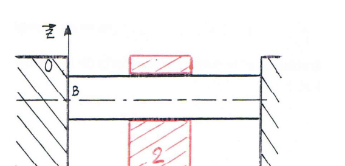
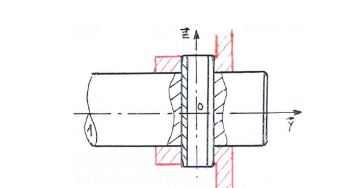
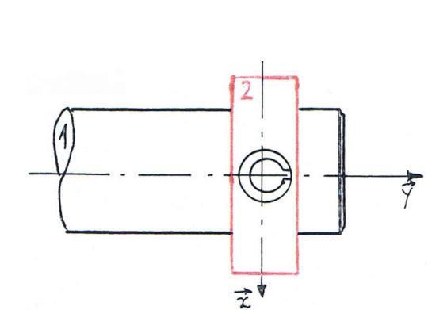
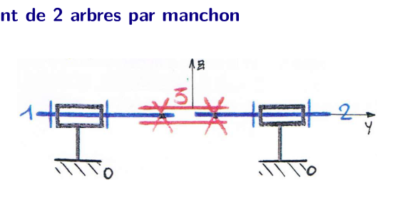
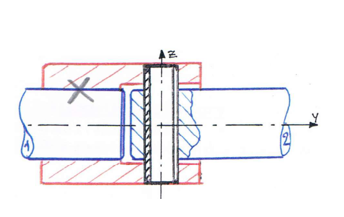
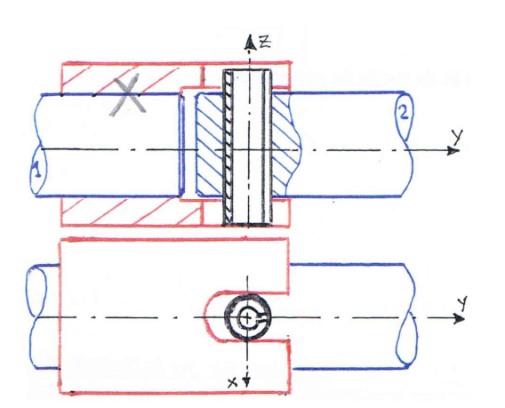

AM2 · SI · Chapitre 2 — Théorie des mécanismes (TD, partie 1)
Association de liaisons : correction détaillée
Première partie du TD « Théorie des mécanismes (C02) », dans l'ordre du TD : articulation, double guidage cylindrique,
accouplement par goupille (deux versions), accouplement de deux arbres par manchon. Pour chaque question : la démarche, le calcul,
puis le résultat du corrigé. L'idée centrale : des liaisons en série s'additionnent, des liaisons en parallèle s'égalisent.
1. Avant de commencer : l'essentiel
Deux façons d'associer des liaisons
En série (une pièce intermédiaire entre deux liaisons) : les mouvements s'ajoutent. Le torseur cinématique équivalent est la somme des torseurs. Les efforts, eux, passent d'une liaison à l'autre : le torseur des actions équivalent est celui de la chaîne, mesuré au même point.
En parallèle (deux liaisons entre les mêmes pièces) : les mouvements doivent être identiques sur les deux liaisons. On égalise donc les torseurs cinématiques, et les efforts s'ajoutent.
Isostatisme : compter les degrés de liberté
Pour un mécanisme à \(\gamma\) boucles et \(m\) mobilités internes, on compare le nombre de conditions cinématiques indépendantes (\(I_c\)) au nombre de mouvements autorisés. Le degré d'hyperstatisme est :
\[h = m - I_c + E_c,\qquad E_c=6\,\gamma\]
Le corrigé fait le même calcul en statique (\(h=m-E_s+I_s\)) et trouve le même résultat : ces deux approches servent de contrôle croisé.
Un mécanisme à \(h=0\) est isostatique ; \(h>0\) signifie hyperstatique de degré \(h\).
Méthode commune
1) Tracer le graphe des liaisons. 2) Écrire le torseur cinématique et le torseur des actions de chaque liaison, au même point.
3) Réduire les liaisons en série (somme) ou en parallèle (égalité). 4) Identifier la liaison équivalente. 5) Compter \(h\).
2. Exercice 1 — Articulation

Énoncé : un tube 1 est lié à un axe 2, lui-même lié à une tige 3 (articulation en coupe).
Q1Graphe des liaisons
La question en clair
Établir le graphe des liaisons. Comment sont associées les deux liaisons ?
Démarche
Une liaison entre 1 et 2, une autre entre 2 et 3 : 2 est au milieu, donc les deux liaisons sont en série.
Pour leur nature, on regarde les axes : la liaison 1/2 tourne autour de \(\vec z\) en \(O\), la liaison 2/3 autour de \(\vec y\) en \(O\). Ce sont deux pivots.
Réponse
Graphe : \(0\)–(bâti)–\(1\) — pivot d'axe \((O,\vec z)\) — \(2\) — pivot d'axe \((O,\vec y)\) — \(3\). Les deux liaisons sont en série.
Q2Torseurs de la liaison 1/2
La question en clair
Définir le torseur cinématique \(\{\mathcal V_{2/1}\}\) et le torseur des actions \(\{\mathcal T_{2\to1}\}\) de la liaison \(\mathcal L_{1/2}\).
Démarche
Un pivot d'axe \(\vec z\) laisse libre la rotation autour de \(\vec z\) : \(\vec\Omega_{2/1}=\omega_z\,\vec z\), et interdit toute vitesse de translation.
Les actions : on bloque les 5 autres composantes. Il reste le moment selon \(\vec z\) (\(N_{21}\)) — ici noté avec les composantes \(X,Y,Z\) et \(L,M\) à déterminer.
Le moment selon \(\vec z\) est nul pour un pivot : la liaison laisse tourner librement autour de \(\vec z\).
Réponse
Torseur cinématique : rotation \(\omega_z\) seule. Torseur des actions : \(X_{21},Y_{21},Z_{21}\) en résultante, \(L_{21},M_{21}\) en moment (\(N_{21}=0\)).
⚠️ Lecture du corrigé
Dans le corrigé imprimé, le torseur cinématique de cette liaison est écrit avec une composante de translation selon \(\vec z\) (notée \(V_{O,2/1}^z\)).
Pour un pivot pur, cette translation est nulle : c'est la rotation \(\omega_z\) qui est libre. Vérifie le sens dans ton cours avant de t'en servir.
Q3Torseurs de la liaison 2/3
La question en clair
Même question pour la liaison \(\mathcal L_{2/3}\) (pivot d'axe \(\vec y\)).
Démarche
Même raisonnement, avec l'axe \(\vec y\) : \(\vec\Omega_{3/2}=\omega_y\,\vec y\), vitesse nulle en \(O\).
Les actions : résultante \(X_{32},Y_{32},Z_{32}\), moments \(L_{32}\) et \(N_{32}\) selon \(\vec x\) et \(\vec z\) ; le moment selon \(\vec y\) est nul.
Réponse
Rotation libre \(\omega_y\) seule ; actions \(X_{32},Y_{32},Z_{32}\) et moments \(L_{32},N_{32}\) (\(M_{32}=0\)).
Q4Liaison équivalente 1/3
La question en clair
Déduire le torseur de la liaison équivalente \(\mathcal L_{1/3}\) entre 1 et 3, et dire quelle liaison c'est.
Démarche (approche cinématique)
Les liaisons sont en série : on additionne les torseurs cinématiques, en \(O\).
\(\{\mathcal V_{3/1}\}_O=\{\mathcal V_{3/2}\}_O+\{\mathcal V_{2/1}\}_O\).
On obtient deux rotations libres (\(\omega_y\) et \(\omega_z\)) et aucune translation : la rotation autour de \(\vec x\) est bloquée.
Approche statique
Les efforts passent d'une liaison à l'autre : \(\{\mathcal T_{3\to2}\}_O=\{\mathcal T_{2\to1}\}_O\) et on en déduit \(M_{21}=0\) et \(N_{32}=0\) (un moment ne peut pas traverser une liaison qui le laisse libre).
Résultat : \(\{\mathcal T_{3\to1}\}_O\) a une résultante \(X_{31},Y_{31},Z_{31}\) et un moment \(L_{31}\) ; les moments \(M_{31}\) et \(N_{31}\) sont nuls.
Réponse
Liaison équivalente : sphérique à doigt de centre \(O\) (rotation autour de \(\vec x\) bloquée, rotations autour de \(\vec y\) et \(\vec z\) libres).
Q5L'articulation est-elle isostatique ?
La question en clair
Dire si la liaison est isostatique.
Démarche
Il n'y a pas de boucle fermée : c'est une chaîne ouverte (1–2–3 sans retour sur 1).
Dans une chaîne ouverte, le nombre de mobilités ne peut pas créer de sur-contrainte : \(h=0\).
Réponse
La liaison équivalente est isostatique (chaîne ouverte).
3. Exercice 2 — Double guidage cylindrique

Énoncé : un bâti 0 porte deux colonnes d'axes \((A,\vec y)\) et \((B,\vec y)\), d'entraxe \(e=\overrightarrow{AB}\cdot\vec z\). Le coulisseau 2 glisse sur les deux colonnes.
Q1Torseurs de la liaison \(\mathcal L^A_{2/0}\)
La question en clair
Torseur cinématique et torseur des actions de la liaison en \(A\) (axe \((A,\vec y)\)).
Démarche
La colonne autorise à la fois une translation selon \(\vec y\) et une rotation autour de \(\vec y\) : c'est un pivot glissant d'axe \(\vec y\).
Actions : on bloque les composantes qui ne sont pas libres, il reste \(X_A,Z_A\), \(L_A,N_A\) (\(Y_A\) et \(M_A\) sont nuls : mouvement selon \(\vec y\) et rotation autour de \(\vec y\)).
La question en clair
Déduire le torseur de la liaison équivalente \(\mathcal L_{2/0}\). Quelle est cette liaison ?
Démarche (approche cinématique)
Les deux pivots glissants relient les mêmes pièces : ils sont en parallèle. Les mouvements doivent donc être identiques.
On déplace les deux torseurs au même point \(A\) (avec \(\overrightarrow{AB}=e\,\vec z\)). Le torseur en \(B\) donne un terme de rotation en plus : \(\overrightarrow{AB}\wedge\vec\Omega_{2/0}\).
L'égalité des torseurs impose \(\omega_{yB}=0\) : les deux colonnes empêchent toute rotation autour de \(\vec y\).
Approche statique
Les efforts s'ajoutent : \(\{\mathcal T^{eq}_{2\to0}\}_A=\{\mathcal T^A_{2\to0}\}_A+\{\mathcal T^B_{2\to0}\}_A\), en déplaçant \(\{\mathcal T^B\}\) de \(B\) vers \(A\).
Le déplacement de \(\vec F_B=X_B\vec x+Z_B\vec z\) de \(B\) vers \(A\) crée un moment \(\overrightarrow{AB}\wedge\vec F_B=e\,X_B\,\ldots\) : c'est ce qui donne le terme \(e\,X_B\) dans le torseur équivalent.
Réponse
Liaison équivalente : glissière de direction \(\vec y\) (translation selon \(\vec y\) seule, rotation bloquée).
Torseur des actions en \(A\) : résultante \((X_A+X_B)\vec x+(Z_A+Z_B)\vec z\), moment \((L_A+L_B)\vec x+e\,X_B\,\vec y+(N_A+N_B)\vec z\).
Le terme \(e\,X_B\,\vec y\) vient du transport de \(\vec F_B\) de \(B\) vers \(A\) (bras \(e\)).
Q4Isostatisme du double guidage
La question en clair
La liaison est-elle isostatique ?
Démarche (approche cinématique)
Mobilités : \(m_u=1\) (translation selon \(\vec y\)), \(m_i=0\).
Une boucle (\(\gamma=1\)) : \(E_c=6\gamma=6\).
Conditions cinématiques : chacun des 2 pivots glissants impose \(I_c=2\times2=4\).
\(h=m-I_c+E_c=1-4+6=3\).
RéponseHyperstatique de degré 3. Le contrôle en statique (\(E_s=6\), \(I_s=8\)) donne aussi \(h=3\).
4. Exercice 3 — Accouplement par goupille
Version 1 : poulie large (22 mm)

Énoncé, version 1 : arbre 1 (\(\varnothing20\)) et poulie 2 (largeur 22) reliés par une goupille élastique 3 (\(\varnothing8\)).
Q1Graphe des liaisons
La question en clair
Établir le graphe des liaisons de la version 1.
Démarche
Le moyeu de la poulie glisse sur l'arbre selon \(\vec y\) et tourne autour de \(\vec y\) : pivot glissant d'axe \(\vec y\) entre 1 et 2.
La goupille traverse 1 et 2 selon \(\vec z\) : elle permet une rotation et une translation selon \(\vec z\) avec chaque pièce, donc deux pivots glissants d'axe \(\vec z\) (liaison 1/3 et 3/2).
La question en clair
Déduire le torseur de la liaison équivalente entre 1 et 2. Quelle est cette liaison ?
Démarche
Les deux pivots glissants d'axe \(\vec z\) (1/3 puis 3/2) sont en série : leur association est un pivot glissant d'axe \(\vec z\).
Ce pivot glissant \(\vec z\) est en parallèle avec le pivot glissant \(\vec y\) (1/2). On égalise les mouvements : \(\omega_y=0\) et \(V_y=0\). Il ne reste aucun mouvement.
On additionne les efforts (parallèle). Résultat : une liaison fixe.
Réponse
Liaison équivalente : encastrement entre 1 et 2 (aucun mouvement, torseur cinématique nul).
Q6Isostatisme de la version 1
La question en clair
La liaison est-elle isostatique ?
Démarche (approche cinématique)
Mobilités : \(m_u=0\), \(m_i=2\) (les deux rotations \(\omega_y\) et \(\omega_z\) de la goupille ; compter les mobilités internes de la goupille).
\(\gamma=1\), donc \(E_c=6\).
\(I_c=6\) (les trois liaisons en parallèle imposent 6 conditions au total).
\(h=m-I_c+E_c=2-6+6=2\).
RéponseHyperstatique de degré 2. En statique on trouve aussi \(h=2\) (\(E_s=12\), \(I_s=12\)).
Version 2 : poulie étroite (10 mm)

Énoncé, version 2 : même arbre et même goupille, poulie plus étroite (largeur 10 mm).
Q1–Q2Graphe et torseur de 1/2
La question en clair
Le graphe change-t-il ? Quel est le torseur de la liaison 1/2 (guidage sur l'arbre) ?
Démarche
Avec une poulie étroite, le guidage sur l'arbre se fait sur une faible longueur. Le rapport \(L/D\) est petit (\(L\) : longueur de guidage, \(D\) : diamètre) : le corrigé conclut que le contact est une liaison sphère-cylindre (linéaire annulaire) et non plus un pivot glissant.
La liaison sphère-cylindre autorise la translation selon \(\vec y\) et les trois rotations, sauf que la rotation autour de \(\vec y\) doit rester libre. Il reste \(X_{21},Z_{21}\) en efforts, et le moment est nul.
⚠️ À vérifier
Le critère \(L/D\) du corrigé est écrit de façon peu lisible dans le PDF : il faut le relire sur le cours (seuil \(L/D\)) pour être sûr de la règle à retenir.
Q3–Q6Équivalent, isostatisme
La question en clair
Torseurs de 3/2 et 1/3, liaison équivalente 1/2, isostatisme.
Démarche
Les liaisons 3/2 et 1/3 restent des pivots glissants d'axe \(\vec z\), comme en version 1.
En série : pivot glissant \(\vec z\). En parallèle avec la sphère-cylindre : la rotation \(\omega_y\) et la translation \(V_y\) sont bloquées, mais la rotation \(\omega_z\) reste libre.
La liaison équivalente est donc un pivot d'axe \((O,\vec z)\).
Mobilités \(m=m_u+m_i=1+2=3\), \(I_c=2\times2+1\times4=8\) (\(2\times2\) pour les deux pivots glissants, \(1\times4\) pour la sphère-cylindre) ; \(E_c=6\). Donc \(h=3-8+6=1\).
⚠️ Arithmétique à vérifier
Dans le corrigé, la ligne \(2\times1+1\times4\) est donnée égale à 4, alors que \(2+4=6\). Avec 6, on retrouve bien \(h=1\) comme écrit. Il s'agit probablement d'une coquille.
Concl.Quelle version privilégier ?
La question en clair
Quelle association doit-on privilégier en construction ?
Réponse
La version 1 : la version 2 crée un léger rotulage dû à la portée trop courte entre poulie et arbre. La version 1, plus longue, est plus rigide.
5. Exercice 4 — Accouplement de deux arbres par manchon

Énoncé : deux arbres de même axe \(\vec y\), reliés par un manchon 3 encastré sur 1 et sur 2, chacun guidé sur un palier du bâti 0.
Q1Graphe et isostatisme (manchon encastré)
La question en clair
Établir le graphe des liaisons. La liaison est-elle isostatique ?
Démarche
On pose \(\Sigma=\{1+2+3\}\) (les deux arbres et le manchon sont solidaires). Chaque arbre est en pivot d'axe \(\vec y\) sur le bâti.
Mobilités : \(m_u=1\) (rotation autour de \(\vec y\)), \(m_i=0\). \(\gamma=1\), donc \(E_c=6\).
\(I_c=2\times1=2\) (les deux pivots imposent deux conditions de rotation de plus, comptées ici comme dans le corrigé).
\(h=m-I_c+E_c=1-2+6=5\).
RéponseHyperstatique de degré 5. Le manchon encastré sur les deux arbres crée une boucle très sur-contrainte.
Réalisation 1 : manchon encastré sur 1, jeu radial sur 2

Réalisation 1 : le manchon 3 est encastré sur 1 mais avec jeu radial sur 2 ; une goupille traverse 3 et 2.
Q2Graphe et isostatisme
La question en clair
Établir le graphe. Cette solution est-elle isostatique ?
Démarche
Le manchon ne touche plus 2 en rotation libre : la goupille le relie à 2 par un pivot glissant d'axe \(\vec z\). L'arbre 2 reste en pivot sur le bâti.
Mobilités : \(m=1\). Conditions cinématiques : \(I_c=2\times1+1\times2=4\) (une liaison pivot, plus un pivot glissant qui impose deux conditions). \(E_c=6\).
\(h=1-4+6=3\).
RéponseHyperstatique de degré 3 : la solution n'est pas isostatique, mais elle est moins sur-contrainte que le manchon encastré (degré 5).
Réalisation 2 : goupille liée à 2 en contact par rainure

Réalisation 2 : le manchon 3 est encastré sur 1, avec un jeu radial sur 2 ; une goupille liée à 2 est en contact avec 3 par une rainure.
Q3Graphe et isostatisme
La question en clair
Établir le graphe. Cette solution est-elle isostatique ?
Démarche
La goupille, liée à 2, pénètre dans une rainure du manchon : le contact se fait par une sphère-cylindre (dans la rainure, selon \(\vec z\)) et non par une pivot glissant.
Mobilités \(m=1\), \(\gamma=1\), \(E_c=6\). Le corrigé annonce \(h=1\) ; le détail des conditions \(I_c\) est peu lisible, à refaire avec le contact retenu.
RéponseHyperstatique de degré 1. Cette solution est plus proche de l'isostatisme que la réalisation 1.
⚠️ À vérifier
Le détail du calcul \(I_c\) pour cette réalisation est peu lisible dans le corrigé ; le résultat \(h=1\) est donné, il faut le refaire avec le contact choisi pour être certain.
Q4Solution isostatique
La question en clair
Proposer une solution isostatique pour transmettre la rotation entre 1 et 2 avec le manchon lié par goupilles aux arbres.
Réponse (corrigé)
Il suffit de combiner les deux réalisations : une liaison pivot glissant par goupille sur chaque arbre, et une liaison sphère-cylindre qui permet le jeu radial nécessaire. Le manchon ne transmet que la rotation, et les jeux évitent toute sur-contrainte.
6. À retenir
Série : les mouvements s'ajoutent. Parallèle : les mouvements s'égalisent, les efforts s'ajoutent.
Chaîne ouverte : toujours isostatique. Boucle : l'hyperstatisme apparaît.
Formule : \(h=m-I_c+E_c\), avec \(E_c=6\gamma\). Le contrôle statique (\(h=m-E_s+I_s\)) doit donner le même résultat.
Montages réels : une portée courte rapproche le montage d'une rotule, une liaison en jeu limite la sur-contrainte.